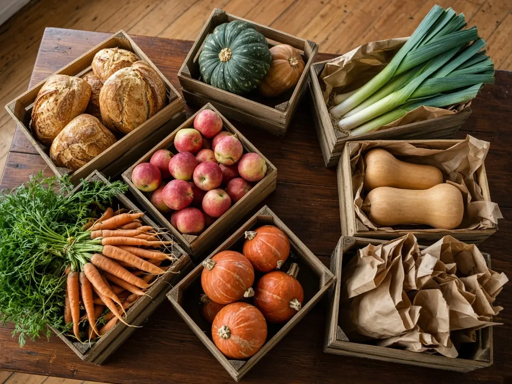

We collect surplus food from local shops and growers and share it with neighbours who need it, every week, no forms and no judgement.

This is a concept page for a fictional charity. In a real build, this block would connect to the organisation's own donation provider.